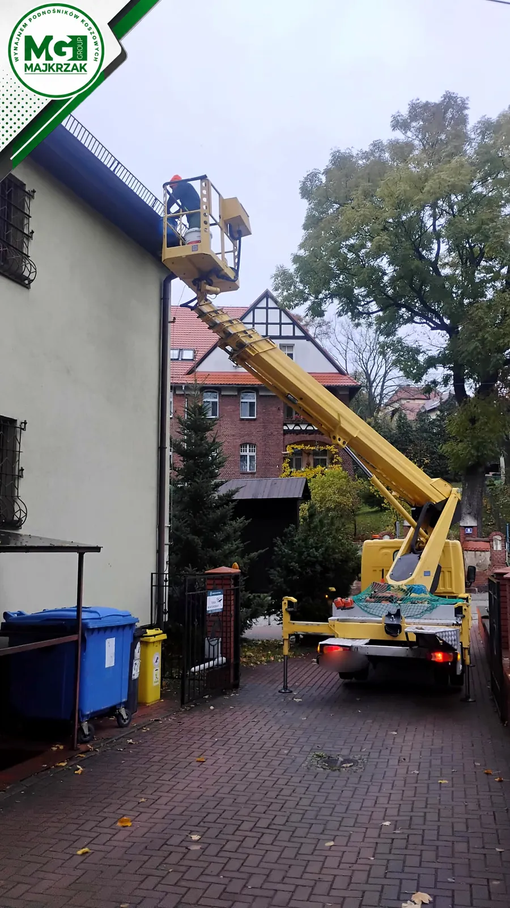
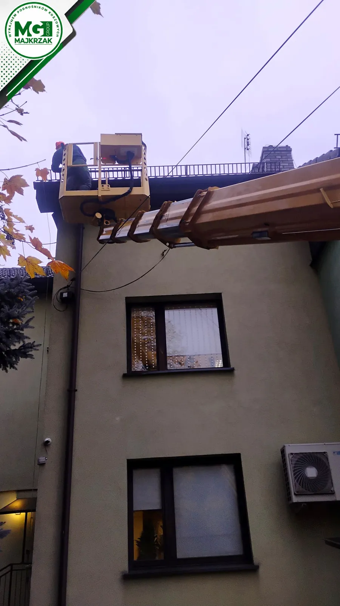
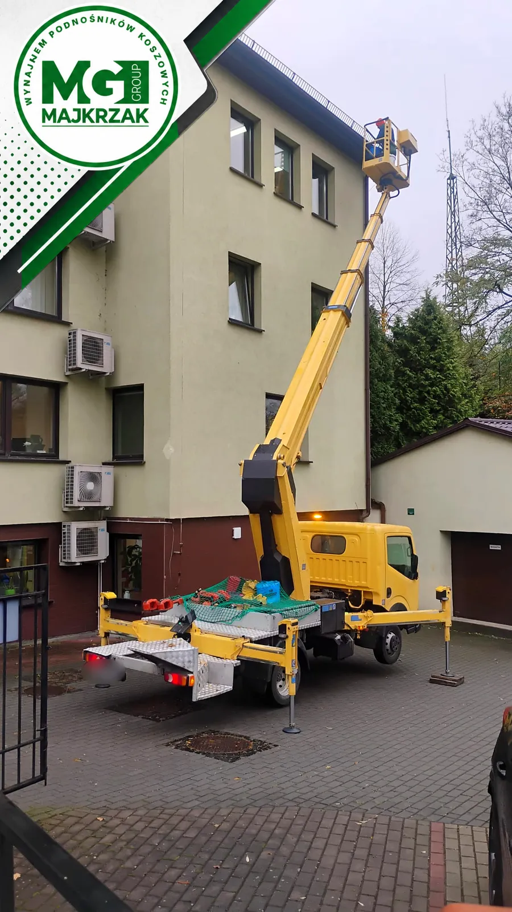
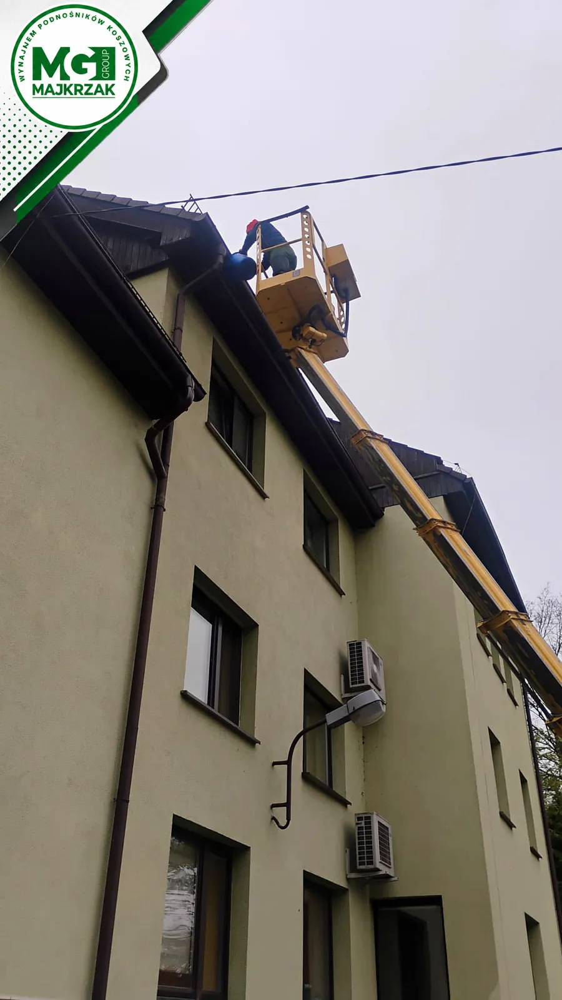
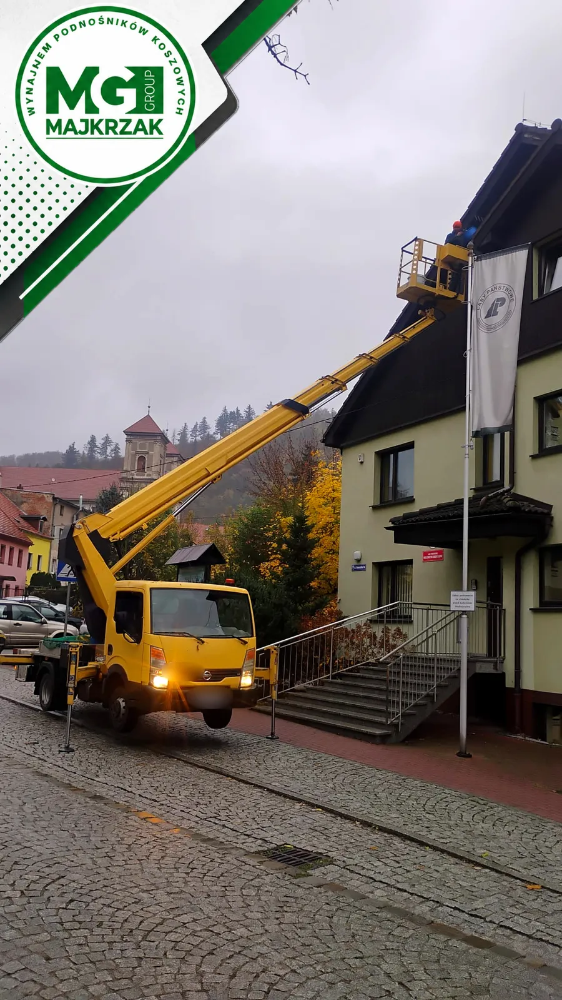

Podnośnik:
511 622 544
Rynny, rury spustowe i obróbki – czyścimy z kosza podnośnika, bez drabin i bez chodzenia po dachu.
Liście, igliwie, mech i błoto zatykają rynny co roku. Woda przelewa się wtedy po elewacji, zalewa fundamenty, a zimą zamarza i rozsadza rynnę. Z kosza podnośnika dojeżdżamy wzdłuż całej rynny, także na wysokich budynkach, gdzie drabina nie sięga.
Mówisz na to czyszczenie rynien, udrażnianie rynien, odtykanie rynny, mycie rynien czy czyszczenie orynnowania? Chodzi o to samo – rynny i rury spustowe mają znów odprowadzać wodę, a nie lać ją po ścianie.
Wyślij SMS-em zdjęcie budynku i miejsca, gdzie może stanąć auto.
Podajemy cenę za dojazd i czas pracy, ustalamy termin.
Jedziemy koszem wzdłuż rynny, wybieramy liście i płuczemy spusty.
Zabieramy wybrane śmieci, pod budynkiem zostaje czysto.
Trzykondygnacyjny budynek z wysokim dachem i rynnami pełnymi liści po jesieni. Podnośnik stanął na kostce przed wejściem, a kosz przejechał wzdłuż rynien z każdej strony budynku. Bez rusztowania i bez blokowania wejścia na cały dzień.





Zadzwoń albo wyślij zdjęcie SMS-em.
📞 511 622 544Czyścimy rynny w Bielawie, Dzierżoniowie, Pieszycach i okolicznych miejscowościach. Przy kilku budynkach w jednym miejscu (wspólnoty, osiedla) koszt dojazdu dzieli się na wszystkich.
Ceny i kalkulator: cennik wynajmu podnośnika.
Zwykle raz w roku, najlepiej jesienią po opadnięciu liści. Gdy obok rosną wysokie drzewa – dwa razy w roku.
Woda przelewa się przez brzeg rynny w czasie deszczu, na elewacji są zacieki, a z rury spustowej leci mało wody albo wcale.
Tak. Podnośnik ma 27 m wysokości roboczej, więc sięga rynien nawet na wysokich budynkach.
Zależy od długości rynien i dojazdu. Wyślij zdjęcie budynku SMS-em, a podamy cenę. Stawki godzinowe są w cenniku.
Zadzwoń albo wyślij zdjęcie SMS-em – wycenimy i ustalimy termin
📞 Zadzwoń: 511 622 544💬 SMS: 511 622 544